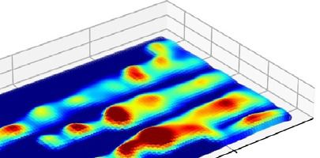
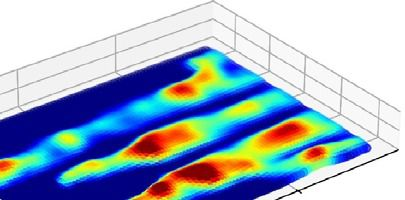
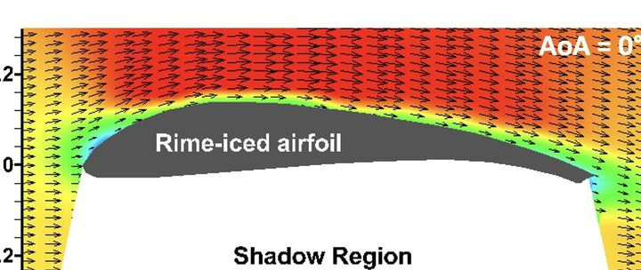
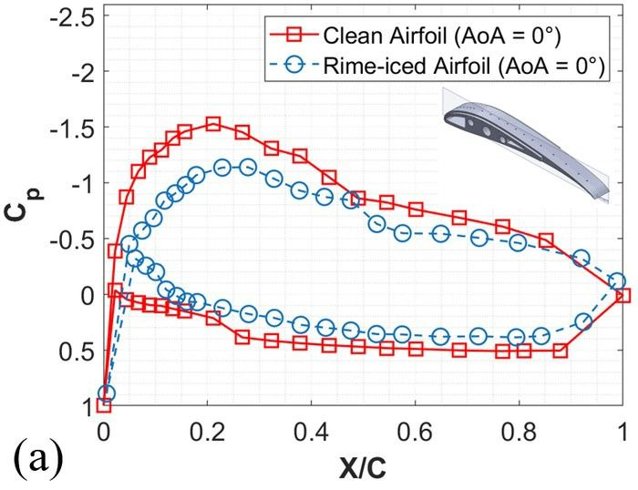
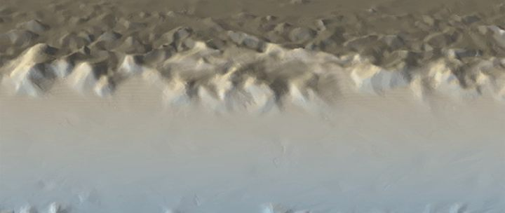
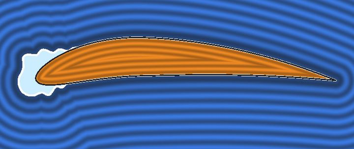
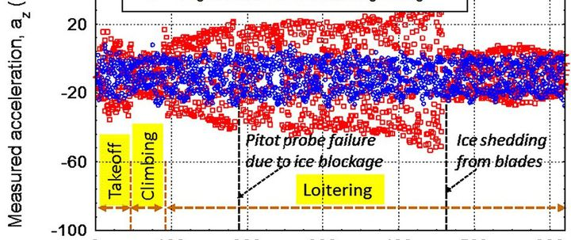
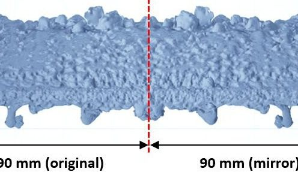

Agents curate it. Generative models learn from it.
AI systems are becoming the first consumers of scientific data. In FROST, agents are also its first curators, under human supervision, and generative models are its proof of value.
Five agents, one human sign-off
Five cooperating agents carry records from legacy storage to a validated, analyzed, consistency-checked state. Every agent action becomes a W3C PROV record: prompt, model, inputs and outputs with SHA-256, tool calls, cost, and the human decision.
Crawl legacy storage; type and hash files; score metadata completeness; rank for curation.
→ readiness queueRun feature extractors and metadata agents; link records; check consistency.
→ linked recordsScanned shape + condition vector → meshed, configured, validated case.
→ validated caseTriple decomposition; flow fingerprints; similar-case retrieval across FROST.
→ fingerprintsDimensional, physical, and literature consistency; escalate failures to a human.
→ pass or escalate→ FROST release
Agents have already read the archive's papers
LLM agents read the PI's open-access papers, slide decks, and internal reports and drafted machine-readable records with conditions, instruments, and stated volumes. A curator checked every drafted value against its source before it was used.
Agent output is a draft, never data
Five safeguards make every value checkable:
- Each value points to the page, table, or file it came from.
- Physics checks reject values that violate conservation or the facility envelope.
- A domain curator signs off every record before release.
- Agent precision and recall are measured on a curator-labeled test set and published with every release.
- A second curator blind-audits a random 5% of signed-off records.
Agents that read a flow field
PhysMiner splits the velocity-gradient tensor into rigid rotation, pure shear, and normal straining, then four agents reason over the result, the literature, and a library of six reference flows that includes an iced airfoil and a propeller wake.
Session replay · glaze-iced GLC305 airfoil (IDDES)
Run statistics from the periodic-hill benchmark, where PhysMiner also proposed a turbulence-model correction that improved agreement with experiment.

PhysMiner: agent-labeled K–H and hairpin vortices over a glaze-iced airfoil

PhysMiner triple decomposition: rigid rotation, normal strain, pure shear
A physics-guided generative model for icing
Conditional diffusion and flow-matching models, pretrained on validated simulation and tuned on measurements, generate ice, water-film, temperature, and flow fields with calibrated uncertainty, inside a certified envelope.


0.008 mm
Median absolute error of a ConvLSTM forecast of runback film thickness trained on ISU-IRT DIP data, on the order of the 0.02 mm measurement uncertainty.

0.9–2.1 mm
Mean ice-thickness error of an agent-developed accretion model over NASA IRT runs 401–405, with no fitted coefficients.

5–6 orders
Closer match to PIV-like cell averages from exact spectral-projection guidance than from gradient-based diffusion posterior sampling (under review).
Six views, one ID
Each harmonized record is exported as six views, so ML users pick the representation that fits their architecture. Every sample carries a measurement mask, uncertainty, origin tag, and provenance.

ℝ^(T×C×H×W)Tensors for CNNs and diffusion models.

c ∈ ℝ⁸ → y ∈ ℝ⁴⁴Condition-to-QoI pairs for MLPs and neural operators.

G = (V, E)Scanned ice as a graph for GNNs.

φ(x; c): ℝ³ → ℝSigned-distance fields for implicit models.

[c | g | p₁…pₙ | t₁…tₘ]Token streams for transformers.

Croissant + PROVMachine-readable records for LLM agents.